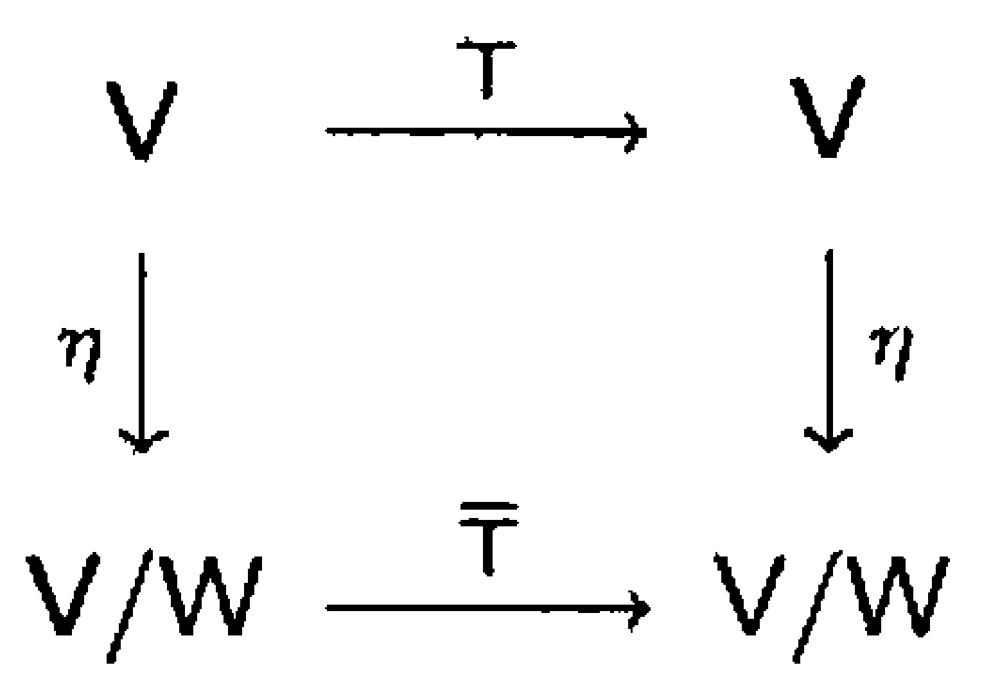

§ 26. Invariant Subspaces and the Cayley-Hamilton Theorem¶
Invariant Subspaces¶
Definition 26.1 : \(T\)-Invariant Subspace
Let \(T\) be a linear operator on a vector space \(V\). A subspace \(W\) of \(V\) is called a \(T\)-invariant subspace of \(V\) if \(T(W) \subseteq W\), that is, if \(T(v) \in W\) for all \(v \in W\).
Example 26.2 : Examples of \(T\)-invariant subspaces
Suppose that \(T\) is a linear operator on a vector space \(V\). Then the following subspaces of \(V\) are \(T\)-invariant:
- \(\{0\}\)
- \(V\)
- \(R(T)\)
- \(N(T)\)
- \(E_{\lambda}\), for any eigenvalue \(\lambda\) of \(T\).
Proof
-
Since \(T(0)=0\), we have \(T(\{0\})=\{0\}\subseteq \{0\}\), so \(\{0\}\) is \(T\)-invariant.
-
For every \(x\in V\), \(T(x)\in V\), so \(T(V)\subseteq V\), and hence \(V\) is \(T\)-invariant.
-
Let \(y\in R(T)\). Then \(y=T(x)\) for some \(x\in V\), so
\[ T(y)=T(T(x))=T^{2}(x)\in R(T), \]which shows \(T(R(T))\subseteq R(T)\).
-
Let \(x\in N(T)\). Then \(T(x)=0\), so
\[ T(x)\in N(T) \]because \(0\in N(T)\). Hence \(T(N(T))\subseteq N(T)\).
-
Let \(x\in E_{\lambda}\), where \(\lambda\) is an eigenvalue of \(T\). Then \(T(x)=\lambda x\). Applying \(T\) again yields
\[ T(T(x))=T(\lambda x)=\lambda T(x)=\lambda(\lambda x)=\lambda(\lambda x), \]so \(T(x)=\lambda x\in E_{\lambda}\). Therefore \(T(E_{\lambda})\subseteq E_{\lambda}\), and \(E_{\lambda}\) is \(T\)-invariant.
Definition 26.3 : \(T\)-Cyclic Subspace
Let \(T\) be a linear operator on a vector space \(V\), and let \(x\) be a nonzero vector in \(V\). The subspace
is called the \(T\)-cyclic subspace of \(V\) generated by \(x\).
Theorem 26.4 : \(T\)-Cyclic subspace generated by \(x\) is the minimal \(T\)-invariant subspace containing \(x\).
Let \(T\) be a linear operator on a vector space \(V\), \(x\) be a nonzero vector in \(V\), and \(W\) be the \(T\)-cyclic subspace of \(V\) generated by \(x\).
- (a) \(W\) is \(T\)-invariant.
- (b) \(W\) is the "smallest" \(T\)-invariant subspace of \(V\) containing \(x\). That is, any \(T\)-invariant subspace of \(V\) containing \(x\) must also contain \(W\).
Proof
-
(a)
Let \(w \in W\). Then there exists an integer \(m \ge 0\) and scalars \(a_{0}, a_{1}, \ldots, a_{m}\) such that\[ w=\sum_{i=0}^{m} a_{i} T^{i}(x). \]Using linearity of \(T\),
\[ T(w)=T\left(\sum_{i=0}^{m} a_{i} T^{i}(x)\right)=\sum_{i=0}^{m} a_{i} T^{i+1}(x). \]But \(T^{i+1}(x)\) is one of the spanning vectors of \(W\), so the right-hand side is a linear combination of vectors in \(\{x, T(x), T^{2}(x), \ldots\}\). Hence \(T(w)\in W\), and therefore \(T(W)\subseteq W\). Thus \(W\) is \(T\)-invariant.
-
(b)
Let \(U\) be any \(T\)-invariant subspace of \(V\) such that \(x \in U\). Because \(U\) is \(T\)-invariant, \(T(x)\in U\). Applying \(T\) repeatedly, we obtain\[ T^{i}(x)\in U \quad \text{for all integers } i\ge 0. \]Since \(U\) is a subspace, it contains the span of any subset of its vectors. Therefore,
\[ \operatorname{span}\left(\left\{x, T(x), T^{2}(x), \ldots\right\}\right)\subseteq U, \]that is, \(W\subseteq U\). Hence every \(T\)-invariant subspace of \(V\) containing \(x\) must contain \(W\), so \(W\) is the smallest \(T\)-invariant subspace of \(V\) containing \(x\).
Definition 26.5 : Restriction to a \(T\)-Invariant Subspace
If \(T\) is a linear operator on \(V\) and \(W\) is a \(T\)-invariant subspace of \(V\), then the restriction \(T_{W}\) of \(T\) to \(W\) is a mapping from \(W\) to \(W\), and it follows that \(T_{W}\) is a linear operator on \(W\).
Theorem 26.6 : Characteristic polynomial of a restriction divides the original characteristic polynomial.
Let \(T\) be a linear operator on a finite-dimensional vector space \(V\), and let \(W\) be a \(T\)-invariant subspace of \(V\). Then the characteristic polynomial of \(T_{W}\) divides the characteristic polynomial of \(T\).
Proof
Choose an ordered basis \(\gamma=\left\{v_{1}, v_{2}, \ldots, v_{k}\right\}\) for \(W\), and extend it to an ordered basis \(\beta=\left\{v_{1}, v_{2}, \ldots, v_{k}, v_{k+1}, \ldots, v_{n}\right\}\) for \(V\). Let \(A=[T]_{\beta}\) and \(B_{1}=\left[T_{W}\right]_{\gamma}\). Then, by Exercise 26.12, \(A\) can be written in the form
Let \(f(t)\) be the characteristic polynomial of \(T\) and \(g(t)\) the characteristic polynomial of \(T_{W}\). Then
by Exercise 21.21. Thus \(g(t)\) divides \(f(t)\).
Theorem 26.7 : Basis and characteristic polynomial of a cyclic subspace
Let \(T\) be a linear operator on a finite-dimensional vector space \(V\), and let \(W\) denote the \(T\)-cyclic subspace of \(V\) generated by a nonzero vector \(v \in V\). Let \(k=\operatorname{dim}(W)\). Then
- (a) \(\left\{v, T(v), T^{2}(v), \ldots, T^{k-1}(v)\right\}\) is a basis for \(W\).
- (b) If \(a_{0} v+a_{1} T(v)+\cdots+a_{k-1} T^{k-1}(v)+T^{k}(v)=0\), then the characteristic polynomial of \(T_{W}\) is \(f(t)=(-1)^{k}\left(a_{0}+a_{1} t+\cdots+a_{k-1} t^{k-1}+t^{k}\right)\).
Proof
-
(a)
Since \(v \neq 0\), the set \(\left\{v\right\}\) is linearly independent. Let \(j\) be the largest positive integer for which\[ \beta=\left\{v, T(v), \ldots, T^{j-1}(v)\right\} \]is linearly independent. Such a \(j\) must exist because \(V\) is finite-dimensional. Let \(Z=\operatorname{span}(\beta)\). Then \(\beta\) is a basis for \(Z\). Furthermore, \(T^{j}(v) \in Z\) by Theorem 5.9. We use this information to show that \(Z\) is a \(T\)-invariant subspace of \(V\). Let \(w \in Z\). Since \(w\) is a linear combination of the vectors of \(\beta\), there exist scalars \(b_{0}, b_{1}, \ldots, b_{j-1}\) such that
\[ w=b_{0} v+b_{1} T(v)+\cdots+b_{j-1} T^{j-1}(v) \]and hence
\[ T(w)=b_{0} T(v)+b_{1} T^{2}(v)+\cdots+b_{j-1} T^{j}(v) . \]Thus \(T(w)\) is a linear combination of vectors in \(Z\), and hence belongs to \(Z\). So \(Z\) is \(T\)-invariant.
Furthermore, \(v \in Z\). By Theorem 26.4, \(W\) is the smallest \(T\)-invariant subspace of \(V\) that contains \(v\), so that \(W \subseteq Z\). Clearly, \(Z \subseteq W\), and so we conclude that \(Z=W\). It follows that \(\beta\) is a basis for \(W\), and therefore \(\operatorname{dim}(W)=j\). Thus \(j=k\). This proves (a).
-
(b)
Now view \(\beta\) (from (a)) as an ordered basis for \(W\). Let \(a_{0}, a_{1}, \ldots, a_{k-1}\) be the scalars such that\[ a_{0} v+a_{1} T(v)+\cdots+a_{k-1} T^{k-1}(v)+T^{k}(v)=0 . \]Observe that
\[ \left[T_{W}\right]_{\beta}=\left(\begin{array}{ccccc} 0 & 0 & \cdots & 0 & -a_{0} \\ 1 & 0 & \cdots & 0 & -a_{1} \\ \vdots & \vdots & & \vdots & \vdots \\ 0 & 0 & \cdots & 1 & -a_{k-1} \end{array}\right). \]We claim that the characteristic polynomial of this matrix is
\[ f(t)=(-1)^{k}\left(a_{0}+a_{1} t+\cdots+a_{k-1} t^{k-1}+t^{k}\right). \]To prove this, compute \(f(t)=\det\!\left(\left[T_W\right]_{\beta}-tI_k\right)\). The matrix \(\left[T_W\right]_{\beta}-tI_k\) has the form
\[ \left(\begin{array}{ccccc} -t & 0 & \cdots & 0 & -a_{0} \\ 1 & -t & \cdots & 0 & -a_{1} \\ 0 & 1 & \ddots & 0 & -a_{2} \\ \vdots & \vdots & \ddots & -t & \vdots \\ 0 & 0 & \cdots & 1 & -t-a_{k-1} \end{array}\right). \]Expanding the determinant along the first row yields the recursion
\[ f_k(t)=-t\,f_{k-1}(t)+(-1)^{k}a_{0}, \]and continuing this expansion down the same pattern (equivalently, applying the same cofactor expansion repeatedly to the resulting minors) produces
\[ f_k(t)=(-1)^{k}\left(t^{k}+a_{k-1}t^{k-1}+\cdots+a_{1}t+a_{0}\right) = (-1)^{k}\left(a_{0}+a_{1} t+\cdots+a_{k-1} t^{k-1}+t^{k}\right). \]Thus \(f(t)\) is the characteristic polynomial of \(T_{W}\), proving (b).
Example 26.8 : Example of a cyclic subspace in \(\mathbb{R}^{3}\)
Let \(T\) be the linear operator on \(\mathbb{R}^{3}\) defined by
We determine the \(T\)-cyclic subspace generated by \(e_{1}=(1,0,0)\). Since
and
it follows that
Let \(W=\operatorname{span}\left(\left\{e_{1}, e_{2}\right\}\right)\), the \(T\)-cyclic subspace generated by \(e_{1}\). We compute the characteristic polynomial \(f(t)\) of \(T_{W}\) in two ways: by means of Theorem 26.7 and by means of determinants.
-
(a) By means of Theorem 26.7.
\[ 1 e_{1}+0 T\left(e_{1}\right)+T^{2}\left(e_{1}\right)=0 \]Therefore, by Theorem 26.7(b),
\[ f(t)=(-1)^{2}\left(1+0 t+t^{2}\right)=t^{2}+1 \] -
(b) By means of determinants.
Let \(\beta=\left\{e_{1}, e_{2}\right\}\), which is an ordered basis for \(W\). Since \(T\left(e_{1}\right)=e_{2}\) and \(T\left(e_{2}\right)=-e_{1}\), we have
\[ \left[T_{W}\right]_{\beta}=\left(\begin{array}{rr} 0 & -1 \\ 1 & 0 \end{array}\right) \]and therefore,
\[ f(t)=\operatorname{det}\left(\begin{array}{rr} -t & -1 \\ 1 & -t \end{array}\right)=t^{2}+1 \]
The Cayley-Hamilton Theorem¶
Theorem 26.9 : Cayley-Hamilton Theorem
Let \(T\) be a linear operator on a finite-dimensional vector space \(V\), and let \(f(t)\) be the characteristic polynomial of \(T\). Then \(f(T)=T_{0}\), the zero transformation. That is, \(T\) "satisfies" its characteristic equation.
Proof
We show that \(f(T)(v)=0\) for all \(v \in V\). This is obvious if \(v=0\) because \(f(T)\) is linear; so suppose that \(v \neq 0\). Let \(W\) be the \(T\)-cyclic subspace generated by \(v\), and suppose that \(\operatorname{dim}(W)=k\). By Theorem 26.7(a), there exist scalars \(a_{0}, a_{1}, \ldots, a_{k-1}\) such that
Hence Theorem 26.7(b) implies that
is the characteristic polynomial of \(T_{W}\). Combining these two equations yields
By Theorem 26.6, \(g(t)\) divides \(f(t)\); hence there exists a polynomial \(q(t)\) such that \(f(t)=q(t) g(t)\). So
Example 26.10 : Cayley-Hamilton computation in \(\mathbb{R}^{2}\)
Let \(T\) be the linear operator on \(\mathbb{R}^{2}\) defined by \(T(a, b)=(a+2 b,-2 a+b)\), and let \(\beta=\left\{e_{1}, e_{2}\right\}\). Then
where \(A=[T]_{\beta}\). The characteristic polynomial of \(T\) is, therefore,
It is easily verified that \(T_{0}=f(T)=T^{2}-2 T+5 I\). Similarly.
Corollary 26.11 : Cayley-Hamilton theorem for matrices
Let \(A\) be an \(n \times n\) matrix, and let \(f(t)\) be the characteristic polynomial of \(A\). Then \(f(A)=O\), the \(n \times n\) zero matrix.
Proof
Let \(T=L_{A}:F^{n}\rightarrow F^{n}\) be the linear operator defined by \(T(x)=Ax\). Then, by Theorem 26.9, the characteristic polynomial of \(T\) satisfies
We claim that for any polynomial \(p(t)=c_{0}+c_{1}t+\cdots+c_{m}t^{m}\),
Indeed, using linearity and the fact that \(T^{k}=L_{A}^{k}=L_{A^{k}}\), we have
Applying this to \(p=f\) gives \(f(T)=L_{f(A)}\). Since \(f(T)=T_{0}\), it follows that \(L_{f(A)}\) is the zero transformation on \(F^{n}\), that is,
Therefore \(f(A)=O\).
Invariant Subspaces and Direct Sums¶
Theorem 26.12 : Characteristic polynomial of a direct sum of invariant subspaces
Let \(T\) be a linear operator on a finite-dimensional vector space \(V\), and suppose that \(V=W_{1} \oplus W_{2} \oplus \cdots \oplus W_{k}\), where \(W_{i}\) is a \(T\)-invariant subspace of \(V\) for each \(i\) \((1 \leq i \leq k)\). Suppose that \(f_{i}(t)\) is the characteristic polynomial of \(T_{W_{i}}\) \((1 \leq i \leq k)\). Then \(f_{1}(t) \cdot f_{2}(t) \cdots f_{k}(t)\) is the characteristic polynomial of \(T\).
Proof
The proof is by mathematical induction on \(k\). In what follows, \(f(t)\) denotes the characteristic polynomial of \(T\). Suppose first that \(k=2\). Let \(\beta_{1}\) be an ordered basis for \(W_{1}\), \(\beta_{2}\) an ordered basis for \(W_{2}\), and \(\beta=\beta_{1} \cup \beta_{2}\). Then \(\beta\) is an ordered basis for \(V\) by Theorem 24.17 (d). Let \(A=[T]_{\beta}\), \(B_{1}=\left[T_{W_{1}}\right]_{\beta_{1}}\), and \(B_{2}=\left[T_{W_{2}}\right]_{\beta_{2}}\). It follows that
where \(O\) and \(O^{\prime}\) are zero matrices of the appropriate sizes. Then
as in the proof of Theorem 26.6, proving the result for \(k=2\). Now assume that the theorem is valid for \(k-1\) summands, where \(k-1 \geq 2\), and suppose that \(V\) is a direct sum of \(k\) subspaces, say,
Let \(W=W_{1}+W_{2}+\cdots+W_{k-1}\). It is easily verified that \(W\) is \(T\)-invariant and that \(V=W \oplus W_{k}\). So by the case for \(k=2\), \(f(t)=g(t) \cdot f_{k}(t)\), where \(g(t)\) is the characteristic polynomial of \(T_{W}\). Clearly \(W=W_{1} \oplus W_{2} \oplus \cdots \oplus W_{k-1}\), and therefore \(g(t)=f_{1}(t) \cdot f_{2}(t) \cdots f_{k-1}(t)\) by the induction hypothesis. We conclude that \(f(t)=g(t) \cdot f_{k}(t)=f_{1}(t) \cdot f_{2}(t) \cdots f_{k}(t)\).
Concept 26.13 : Characteristic polynomial of diagonalizable linear operator as a direct sum of eigenspaces
As an illustration of this result, suppose that \(T\) is a diagonalizable linear operator on a finite-dimensional vector space \(V\) with distinct eigenvalues \(\lambda_{1}, \lambda_{2}, \ldots, \lambda_{k}\). By Theorem 24.18, \(V\) is a direct sum of the eigenspaces of \(T\). Since each eigenspace is \(T\)-invariant, we may view this situation in the context of Theorem 26.12. For each eigenvalue \(\lambda_{i}\), the restriction of \(T\) to \(E_{\lambda_{i}}\) has characteristic polynomial \(\left(\lambda_{i}-t\right)^{m_{i}}\), where \(m_{i}\) is the dimension of \(E_{\lambda_{i}}\). By Theorem 26.12, the characteristic polynomial \(f(t)\) of \(T\) is the product
It follows that the multiplicity of each eigenvalue is equal to the dimension of the corresponding eigenspace, as expected.
Definition 26.14 : Direct Sum of Matrices
Let \(B_{1} \in \mathrm{M}_{m \times m}(F)\), and let \(B_{2} \in \mathrm{M}_{n \times n}(F)\). We define the direct sum of \(B_{1}\) and \(B_{2}\), denoted \(B_{1} \oplus B_{2}\), as the \((m+n) \times(m+n)\) matrix \(A\) such that
If \(B_{1}, B_{2}, \ldots, B_{k}\) are square matrices with entries from \(F\), then we define the direct sum of \(B_{1}, B_{2}, \ldots, B_{k}\) recursively by
If \(A=B_{1} \oplus B_{2} \oplus \cdots \oplus B_{k}\), then we often write
Theorem 26.15 : Matrix of an operator relative to a direct-sum basis
Let \(T\) be a linear operator on a finite-dimensional vector space \(V\), and let \(W_{1}, W_{2}, \ldots, W_{k}\) be \(T\)-invariant subspaces of \(V\) such that \(V=W_{1} \oplus W_{2} \oplus \cdots \oplus W_{k}\). For each \(i\), let \(\beta_{i}\) be an ordered basis for \(W_{i}\), and let \(\beta=\beta_{1} \cup \beta_{2} \cup \cdots \cup \beta_{k}\). Let \(A=[T]_{\beta}\) and \(B_{i}=\left[T_{W_{i}}\right]_{\beta_{i}}\) for \(i=1,2, \ldots, k\). Then \(A=B_{1} \oplus B_{2} \oplus \cdots \oplus B_{k}\).
Proof
The proof is by mathematical induction on \(k\).
If \(k=1\), then \(V=W_{1}\) and \(\beta=\beta_{1}\). Hence \(A=[T]_{\beta_{1}}=\left[T_{W_{1}}\right]_{\beta_{1}}=B_{1}\), and therefore
Thus the result holds for \(k=1\).
Assume that the result holds for \(k-1\) summands, where \(k-1\ge 1\). Suppose now that
Let
Because each \(W_i\) is \(T\)-invariant, \(T(W_i)\subseteq W_i\), and hence
Thus \(W\) is \(T\)-invariant, and we also have \(V=W\oplus W_k\).
Let \(\beta'=\beta_{1}\cup\beta_{2}\cup\cdots\cup\beta_{k-1}\). Then \(\beta'\) is an ordered basis for \(W\), and \(\beta=\beta'\cup\beta_k\).
Let \(C=\left[T_{W}\right]_{\beta'}\). Applying the induction hypothesis to the direct sum decomposition
we obtain
Now consider the decomposition \(V=W\oplus W_k\) with ordered bases \(\beta'\) for \(W\) and \(\beta_k\) for \(W_k\). Because both \(W\) and \(W_k\) are \(T\)-invariant, we have \(T(W)\subseteq W\) and \(T(W_k)\subseteq W_k\). Hence for any basis vector \(u\in\beta'\) the vector \(T(u)\) lies in \(W\), so its coordinates relative to \(\beta=\beta'\cup\beta_k\) have zero components on the \(\beta_k\) part. Similarly, for any basis vector \(v\in\beta_k\), the vector \(T(v)\) lies in \(W_k\), so its coordinates relative to \(\beta\) have zero components on the \(\beta'\) part. Therefore the matrix \(A=[T]_{\beta}\) has the block form
where \(O\) and \(O'\) are zero matrices of the appropriate sizes.
Substituting \(C=B_{1}\oplus\cdots\oplus B_{k-1}\) gives
This completes the induction and proves the theorem for all \(k\).
Exercise¶
Exercise 26.8
Let \(T\) be a linear operator on a vector space with a \(T\)-invariant subspace \(W\). Prove that if \(v\) is an eigenvector of \(T_{W}\) with corresponding eigenvalue \(\lambda\), then the same is true for \(T\).
Exercise 26.13
Let \(T\) be a linear operator on a vector space \(V\), let \(v\) be a nonzero vector in \(V\), and let \(W\) be the \(T\)-cyclic subspace of \(V\) generated by \(v\). For any \(w \in V\), prove that \(w \in W\) if and only if there exists a polynomial \(g(t)\) such that \(w=g(T)(v)\).
Exercise 26.16
Let \(T\) be a linear operator on a finite-dimensional vector space \(V\).
- (a) Prove that if the characteristic polynomial of \(T\) splits, then so does the characteristic polynomial of the restriction of \(T\) to any \(T\)-invariant subspace of \(V\).
- (b) Deduce that if the characteristic polynomial of \(T\) splits, then any nontrivial \(T\)-invariant subspace of \(V\) contains an eigenvector of \(T\).
Exercise 26.17
Let \(A\) be an \(n \times n\) matrix. Prove that
Exercise 26.18
Let \(A\) be an \(n \times n\) matrix with characteristic polynomial
- (a) Prove that \(A\) is invertible if and only if \(a_{0} \neq 0\).
-
(b) Prove that if \(A\) is invertible, then
\[ A^{-1}=\left(-1 / a_{0}\right)\left[(-1)^{n} A^{n-1}+a_{n-1} A^{n-2}+\cdots+a_{1} I_{n}\right] . \] -
(c) Use (b) to compute \(A^{-1}\) for
\[ A=\left(\begin{array}{rrr} 1 & 2 & 1 \\ 0 & 2 & 3 \\ 0 & 0 & -1 \end{array}\right) \]
Exercise 26.20
Let \(T\) be a linear operator on a vector space \(V\), and suppose that \(V\) is a \(T\)-cyclic subspace of itself. Prove that if \(U\) is a linear operator on \(V\), then \(UT=TU\) if and only if \(U=g(T)\) for some polynomial \(g(t)\). Hint: Suppose that \(V\) is generated by \(v\). Choose \(g(t)\) according to Exercise 26.13 so that \(g(T)(v)=U(v)\).
Exercise 26.21
Let \(T\) be a linear operator on a two-dimensional vector space \(V\). Prove that either \(V\) is a \(T\)-cyclic subspace of itself or \(T=c I\) for some scalar \(c\).
Exercise 26.22
Let \(T\) be a linear operator on a two-dimensional vector space \(V\) and suppose that \(T \neq c I\) for any scalar \(c\). Show that if \(U\) is any linear operator on \(V\) such that \(UT=TU\), then \(U=g(T)\) for some polynomial \(g(t)\).
Exercise 26.23
Let \(T\) be a linear operator on a finite-dimensional vector space \(V\), and let \(W\) be a \(T\)-invariant subspace of \(V\). Suppose that \(v_{1}, v_{2}, \ldots, v_{k}\) are eigenvectors of \(T\) corresponding to distinct eigenvalues. Prove that if \(v_{1}+v_{2}+\cdots+v_{k}\) is in \(W\), then \(v_{i} \in W\) for all \(i\). Hint: Use mathematical induction on \(k\).
Exercise 26.24
Prove that the restriction of a diagonalizable linear operator \(T\) to any nontrivial \(T\)-invariant subspace is also diagonalizable. Hint: Use the result of Exercise 26.23.
Exercise 26.25
- (a) Prove the converse to Exercise 24.18(a): If \(T\) and \(U\) are diagonalizable linear operators on a finite-dimensional vector space \(V\) such that \(UT=TU\), then \(T\) and \(U\) are simultaneously diagonalizable. Hint: For any eigenvalue \(\lambda\) of \(T\), show that \(E_{\lambda}\) is \(U\)-invariant, and apply Exercise 26.24 to obtain a basis for \(E_{\lambda}\) of eigenvectors of \(U\).
- (b) State and prove a matrix version of (a).
Exercise 26.26
Let \(T\) be a linear operator on an \(n\)-dimensional vector space \(V\) such that \(T\) has \(n\) distinct eigenvalues. Prove that \(V\) is a \(T\)-cyclic subspace of itself. Hint: Use Exercise 26.23 to find a vector \(v\) such that \(\left\{v, T(v), \ldots, T^{n-1}(v)\right\}\) is linearly independent.
Definition 26.16 : Induced Operator on a Quotient Space
Let \(T\) be a linear operator on a vector space \(V\), and let \(W\) be a \(T\)-invariant subspace of \(V\). Define \(\overline{T}: V / W \rightarrow V / W\) by
Exercise 26.27
- (a) Prove that \(\overline{T}\) is well defined. That is, show that \(\overline{T}(v+W)=\overline{T}\left(v^{\prime}+W\right)\) whenever \(v+W=v^{\prime}+W\).
- (b) Prove that \(\overline{T}\) is a linear operator on \(V / W\).
- (c) Let \(\eta: V \rightarrow V / W\) be the linear transformation defined in Exercise 40 of Section 2.1 by \(\eta(v)=v+W\). Show that the diagram of Figure 26.1 commutes; that is, prove that \(\eta T=\overline{T} \eta\). This exercise does not require the assumption that \(V\) is finite-dimensional.

Figure 26.1.
Exercise 26.28
Let \(f(t), g(t)\), and \(h(t)\) be the characteristic polynomials of \(T\), \(T_{W}\), and \(\overline{T}\), respectively. Prove that \(f(t)=g(t) h(t)\). Hint: Extend an ordered basis \(\gamma=\left\{v_{1}, v_{2}, \ldots, v_{k}\right\}\) for \(W\) to an ordered basis \(\beta=\left\{v_{1}, v_{2}, \ldots, v_{k}, v_{k+1}, \ldots, v_{n}\right\}\) for \(V\). Then show that the collection of cosets \(\alpha=\left\{v_{k+1}+W, v_{k+2}+W, \ldots, v_{n}+W\right\}\) is an ordered basis for \(V / W\), and prove that
where \(B_{1}=[T]_{\gamma}\) and \(B_{3}=[\overline{T}]_{\alpha}\).
Exercise 26.29
Use the hint in Exercise 26.28 to prove that if \(T\) is diagonalizable, then so is \(\overline{T}\).
Exercise 26.30
Prove that if both \(T_{W}\) and \(\overline{T}\) are diagonalizable and have no common eigenvalues, then \(T\) is diagonalizable.
Exercise 26.31
Let
let \(T=L_{A}\), and let \(W\) be the cyclic subspace of \(\mathbb{R}^{3}\) generated by \(e_{1}\).
- (a) Use Theorem 26.7 to compute the characteristic polynomial of \(T_{W}\).
- (b) Show that \(\left\{e_{2}+W\right\}\) is a basis for \(\mathbb{R}^{3} / W\), and use this fact to compute the characteristic polynomial of \(\overline{T}\).
- (c) Use the results of (a) and (b) to find the characteristic polynomial of \(A\).
Exercise 26.32
Prove the converse to Exercise 24.9(a) of Section 5.2: If the characteristic polynomial of \(T\) splits, then there is an ordered basis \(\beta\) for \(V\) such that \([T]_{\beta}\) is an upper triangular matrix. Hints: Apply mathematical induction to \(\operatorname{dim}(V)\). First prove that \(T\) has an eigenvector \(v\), let \(W=\operatorname{span}\left(\left\{v\right\}\right)\), and apply the induction hypothesis to \(\overline{T}: V / W \rightarrow V / W\). Exercise 6.35(b) is helpful here.
Exercise 26.39
Let \(\mathcal{C}\) be a collection of diagonalizable linear operators on a finite-dimensional vector space \(V\). Prove that there is an ordered basis \(\beta\) such that \([T]_{\beta}\) is a diagonal matrix for all \(T \in \mathcal{C}\) if and only if the operators of \(\mathcal{C}\) commute under composition. (This is an extension of Exercise 26.25.) Hints for the case that the operators commute: The result is trivial if each operator has only one eigenvalue. Otherwise, establish the general result by mathematical induction on \(\operatorname{dim}(V)\), using the fact that \(V\) is the direct sum of the eigenspaces of some operator in \(\mathcal{C}\) that has more than one eigenvalue.
Exercise 26.40
Let \(B_{1}, B_{2}, \ldots, B_{k}\) be square matrices with entries in the same field, and let \(A=B_{1} \oplus B_{2} \oplus \cdots \oplus B_{k}\). Prove that the characteristic polynomial of \(A\) is the product of the characteristic polynomials of the \(B_{i}\)'s.
Exercise 26.41
Let
Find the characteristic polynomial of \(A\). Hint: First prove that \(A\) has rank \(2\) and that \(\operatorname{span}\left(\left\{(1,1, \ldots, 1),(1,2, \ldots, n)\right\}\right)\) is \(L_{A}\)-invariant.
Exercise 26.42
Let \(A \in \mathrm{M}_{n \times n}(\mathbb{R})\) be the matrix defined by \(A_{i j}=1\) for all \(i\) and \(j\). Find the characteristic polynomial of \(A\).